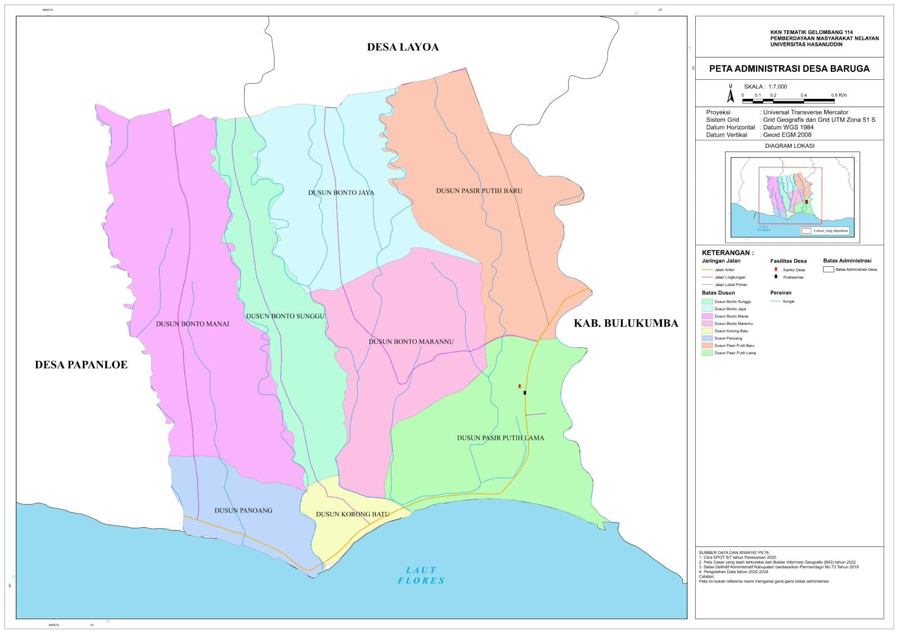

Peta Administrasi
Visualisasi wilayah administratif desa dalam peta digital

Peta Administrasi Desa Pa'jukukang
Pembagian wilayah administratif Desa Pa'jukukang dengan detail yang komprehensif

Peta Tutupan Lahan Desa Biangloe
Sebaran penduduk dan karakteristik demografis wilayah desa
Peta Administrasi Desa Papanloe
Peta batas administrasi Desa Papanloe dalam format PDF berkualitas tinggi

Peta Administrasi Desa Baruga
Peta Administrasi Batas Dusun dan Jalan di Desa Baruga

Peta Potensi Wisata Desa Bonto Tappalang
Peta Potensi Wisata di Desa Bonto Tappalang
Peta Administrasi Desa Balumbung
Peta batas administrasi Desa Balumbung dalam format PDF berkualitas tinggi
Peta Sebaran Penduduk Dusun Pakku' Desa Balumbung
Peta Sebaran Penduduk Dusun Pakku' Desa Balumbung dalam format PDF berkualitas tinggi
Peta Administrasi Desa Batu Karaeng
Peta batas administrasi Desa Batu Karaeng dalam format PDF berkualitas tinggi